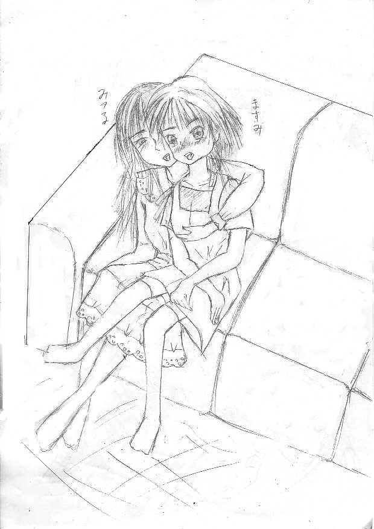
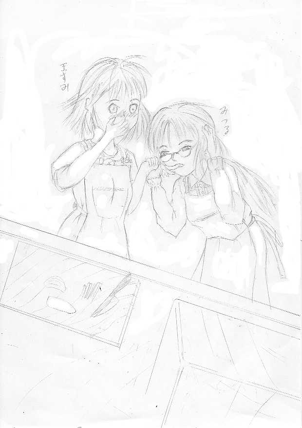

お兄ちゃん♪ 大好きっ
作：きりきり
「お兄ちゃん、朝だよぉ♪」
あたし、高橋真澄（たかはし・ますみ）。受験を控えている中学三年の女の子。
寝坊している某大学１回生の充（みつる）お兄ちゃんを起こしているの。
……お兄ちゃんったら、いつも寝ぼすけだから困っちゃう。
「……ん〜ん、ん？ ……ますみかぁ？ …………今日は休みなんだから寝かせてくれよぉ……」
え？ なんで女の人の声がお兄ちゃんのふとんの中から聞こえてくるの？
まさか…………お兄ちゃんの彼女ぉ？
「あのぅ……あなた誰なんですか？」
恐る恐る尋ねてみる。
初対面の人って、苦手だなぁ。
「……おい、何言ってるんだよ真澄っ。……俺に決まってるだろっ」
俺？ ……綺麗な声なのに、ずいぶん男っぽい口調ね。
……どうしよう。不良の人だったら怖いよぉ〜。
「あ、あの〜っ……あたし、貴女のこと知らないんですけど……」
「……いいかげんにしろよ真澄っ。……充だよ、充っ。……自分の兄貴を忘れたなんて言うなよなっ」
お兄ちゃんのベッドに寝ていた女の人は、ふとんを跳ねのけて起き上がった。
「……」
うわぁ〜綺麗な人。……芸能人みたい。
腰まである長い黒髪がとっても素敵。目元がきりっとしてて、顔も整っていて、肌も白くて……
「……おいますみ、どうしたんだ？ 急に黙りこんで」
女の人は、あたしの顔を覗き込んできた。
ああどうしよう、そんなに見つめられたら瞳に吸い込まれちゃいそう……
「……ますみっ、何ぼーっとしてるんだ？ しっかりしろよ」
あっ、そうだ…………見とれている場合じゃなかったっ。
「え〜っと、で……ですからあなたはいったい誰なんですか？」
「だから、充だって言っているだろ……」
あっ、そうよね……さっきそう言ってたよね……
そうかお兄ちゃんか……あはは、ごめんなさい。でも、ずいぶん綺麗になっちゃったね…………
「……て、ちがあああああうっ！！」
ああ、なんかあたし気が動転してるよぉ。
そうよ、こんな綺麗な女の人が充お兄ちゃんなわけないわよね……
「おいっ、何が違うんだよ？ ……まったく、朝っぱらから変だぞ真澄……って、あれ？」
女の人は、突然固まってしまった。
「あーあーあーっ…………おいっ、いつもの俺の声と違うぞっ！？」
その女の人は、いきなり体中をばたばたと触りだした。
……どうしたんだろ？ 顔色が段々青白くなってきてるよ。
胸を何度も押さえつけ、今度は股の間に指を震わせながら這わせ始めた……
「な…………ないっ！？」
ち……ちょっと待ってよ！ この人、あたしの前で何やろうとしているの？
「な、な、な……なんで俺が女になっているんだあああああ〜っ！！」
え……？ 何言ってるの、この人？
「あの〜もしもし？ いったいどうしたんですか？」
「……おい真澄っ、どういうことだこれは？」
どういうこと、って……あたしの方が知りたいよ〜っ。
「なんで俺が女になってるんだっ！？」
「……え！？ ですからどういうことですか？」
「そ、そんな、……信じられないっ」
この人、体が震えているよ。
もしかして……もしかして本当にほんとにお兄ちゃんなのっ？？
でも、そんなバカなことってあるの？ 男の人が突然女の人になるなんて。
「……本当にお兄ちゃんなの？」
「う……うん、そうだ、そうだよっ。さっきからそう言ってるじゃないかっ！！」
「で、でも……本当にほんと？」
ああ、あたし、どうしても信じれないよぉ……
「本当の本当の本当だよ……ああ、くそぉ！ どうすればいいんだあああああっ！？」
この人、泣きそうになってるよ。……なんか守ってあげたくなっちゃう。
「あの……落ち着いてください。よくわからないけど、あたしができることならなんでもしますから」
あたし、無意識にこの人を抱きしめちゃっていた。心臓の音がドクドクって聞こえてくる。
脈が速いみたい……きっとおびえているからなのね。
吐く息もあたしの胸に当たって、ちょっと感じちゃう。
う〜ん、やっぱりこの人、お兄ちゃんなのかな？ 顔つきも似ているし……
「あっ！ ご……ゴメン、真澄」
お兄ちゃんらしき女の人は、急にあたしから離れた。
なんか顔が赤くなってるよ。
ああそうか……あたし、この人と抱き合っていたんだ。
あたしも急に恥ずかしくなっちゃった。
「……」
なんか言わないと。
「あたし、貴女が充お兄ちゃんだって信じるわ」
うん、根拠はないけど信じよう。
この人、お兄ちゃんの雰囲気があるし……それに嘘をついてるように見えないもの。
「ありがとう、真澄」
女の人……ううん、お兄ちゃんは目に溜まっている涙を指で擦って、ベッドの脇にあった眼鏡をかけた。
あ、やっぱりお兄ちゃんに似ている。お兄ちゃんが髪の毛伸ばしたら、こんな感じになりそう。
いつも眼鏡をかけているから、お兄ちゃんの素顔ってあんまり覚えてないのよね。
あ〜あ、お兄ちゃんの顔って女顔だと思っていたけど、ここまで美人だとは思わなかったわ。
……あたし、完全に負けちゃってる。
「お兄ちゃん、着替えどうする？ あたしの服、貸してあげようか？」
「い……いや、いいよ」
お兄ちゃんの表情、嫌がってるみたい。
ま……男の子が女の子の服着るのは、普通恥かしいよね。
「でもね、今のお兄ちゃんの体は女の子なのよ。ブラジャーくらいつけとかないと」
「う〜ん……確かにこの胸じゃ、動きづらいな」
「そうでしょ♪」
あたしは無理やりお兄ちゃんの手をつかんで、自分の部屋に引っぱっていった。
早くお兄ちゃんを着替えさせなくっちゃ。
こんな綺麗になったのに、男の子の格好じゃ勿体ないもんっ♪
ああ……お兄ちゃん、手が柔らかいよぉ。
「おい真澄、ちょっと待てって……」
お兄ちゃん、抵抗しているけど、本気で力を出してないみたい。
完全に嫌がってはいないってことねっ♪ ……女の子になって力がなくなっただけかもしれないけど。
「真澄の部屋に入ったのも久しぶりだな」
「そう言えばそうね。あたしは、毎朝お兄ちゃんの部屋に入ってるけどね」
「ふんっ、どうせ俺は朝が弱いよ」
ふふっ、本当にお兄ちゃんをこの部屋に入れるのは久しぶり。
なんだか恥ずかしくなってきちゃった。
「真澄……お前まだ、あのぬいぐるみのピ○獣を抱いて寝ているのか？」
お兄ちゃんは、あたしのペットに置いてる大きなピ○獣のぬいぐるみを見てそう言った。
このぬいぐるみはあたしが小さい頃買ってもらった物で、今でも一緒に寝てるんだ。
……だって、夜一人でいると幽霊が出てきそうで怖いんだもん。
「もう、お兄ちゃんのイジワル〜っ」
「お、あのポスターは最近デビューしたアイドルか。……まったく、お前も面食いだよな」
もお〜っ！ お兄ちゃん、うるさいわねぇっ。
さっさと、着替えさせて黙らせよう。
「お兄ちゃん、喋ってないでさっさと着替えてよ」
「やっぱり……着替えないと駄目か？」
「当たり前でしょ」
あたしはお兄ちゃんに、ブラウス、フレアスカート、ブラジャー、キャミソール、靴下……そしてショーツを渡してあげた。
あは……ちょっと変な気分。
「あ〜あ、まさか女物の服を着ることになるとはなあ……」
お兄ちゃんはあたしに背を向けて、ぶかぶかになったパジャマを脱き始めた。
なんか、恥ずかしいみたい。女の子どうしなんだから恥ずかしからなくてもいいのに……
「……おい真澄、このブラジャーどうやってつけるんだ？」
「あー、これはね……」
あたしはお兄ちゃんの背中に寄りそって、ブラジャーのホックを留めてあげた。
「ブラジャーって、結構きついなあ……」
「あたしのブラジャーじゃ、お兄ちゃんの胸のサイズに合わないみたいね」
「つまり、お前より俺の胸の方が大きいってわけか。……ま、しょうかないな」
もぉーっ。ほんとお兄ちゃんって、一言多いわね。
でも、本当にあたしより胸が大きい……うらやましいなあ。
「次は、このキャミソールよ」
「……う、うん」
お兄ちゃんは、困惑しながらもあたしの服に着替えた。
「おい真澄、このパンツはさすかに穿けないよ」
「うん……そうだよね」
そうね。やっぱりあたしも恥ずかしい。
でも、ちょっと残念かなぁ〜って…………やだっ、何考えてるのあたし？（恥）
「真澄……どうだ？」
お兄ちゃんは、正面を向いた。
「……」
お兄ちゃん、すごい綺麗だよぉ〜。これ、本当にあたしの服なんだよね？
「……やっぱり、似合わないか？」
「そ、そんなことないよ。凄く綺麗だよ。……本当、本当だよっ」
ああ、どうしたんだろうあたし。胸がドキドキしているよぉ。
もしかして、あたしって“その気”があるの？
でも、あたし、同じクラスの拓哉くんが好きだし……そんなことないよね。
「そうか。よし、俺も鏡を見てみるか……………………うっ！？」
お兄ちゃん、今の自分の姿を見て固まっちゃったみたい。
……そうよね、女のあたしでも見惚れるくらいだもの。
「お、お兄ちゃん？」
「…………こ、これが俺……？」
お決まりの言葉を言うのが精一杯みたいね。
「そうだよ。お兄ちゃん綺麗だよ」
「ち……ちょっと、何か飲んでくる……」
お兄ちゃんはあたしの部屋を出て、台所に入ると、冷蔵庫から出した麦茶を奇妙なコップに入れた。
コップっていうより、素焼きのお碗みたい。
ごくごくごく……
お兄ちゃんは、勢いよく麦茶を飲んでいる。落ち着こうとしてるみたいね。
「あれ？ お兄ちゃん、その麦茶入れてるコップ、どうしたの？」
「これか？ 昨日の夜水を飲みに来たら、テーブルの上にあったんだ。……どうせ親父が昨日、研究室から持って来たものだろ？ 食器棚からコップ出すのが面倒だったから、これで飲んだんだ」
あたしたちのパパは、大学の考古学者なの。そのせいか、ほとんど家に帰ってこないんだけどね。
ちなみにママは、あたしが小さい頃に死んじゃったんだ。
「お兄ちゃん、よくそんなもので水が飲めるわね」
「別にいいだろ、毒が盛ってあるわけじゃないし。それにこれで飲むと風情があるんだよな……じゃなくてっ、そんなことよりも、これからどうしたらいいのかが問題だよ」
「そうだね」
でも、お兄ちゃんを元に戻す方法なんであるのかしら。
このまま元に戻らなかったら、戸籍とかどうすればいいんだろう。
「おーい、真澄っ。テーブルに置いてあった土器、どこか知らないか？ 昨日調べていて、片付けるのを忘れてたんだ」
別室からパパの声が聞こえてきた。
どうやら、お兄ちゃんが使っているコップを探しているらしい。
「うん、ここにあるよ」
「そうか、わかった…………ん？ この美人な女の人は誰だ？ 真澄」
「お兄ちゃんだよ」
「……信じられないだろうけど、真澄の言うとおりだ」
パパは、じっとお兄ちゃんを見つめている。
胸なんかじろじろ見て……なんか、ちょっとやらしいな。
「ふむ、たしかに充の面影がある……と言うことは、お前、テーブルにあった土器で水を飲んだな」
「ああ……そうだけど」
「原因はそれだ。どうやら、あの伝説は本当だったんだな」
「パパ、伝説って何？」
「この土器は、昨日アメリカにいる知り合いから借りたものなんだ。元は南米に住んでいた原住民からお礼に貰ったものらしいんだが、詳しい歴史を調べたいと頼まれて、昨日から調査していたんだ」
「……どういうものなの？」
「持ち主の話だと、この土器に祈りを込めた水を入れて男性が飲めば、女性に変化する言い伝えがあるらしい。
……なんでも昔、ある町が疫病か何かで女性がいなくなった時に、子孫を残すために作られたのだそうだ」
「凄いね。それ作った人」
「ああ、パパもそう思うな。でも充が女にならなければ信じてなかったよ。……正直、今でも信じられないけどな。
それに伝説だけ聞けば、その村に去勢手術の習慣でもあったのかなあとしか想像できなかったところだ。大昔はアレを取る儀式をやっている国が結構あったからな」
なるほど……昔の中国でも、そういう人いたみたいだしね。
「おい親父っ、その土器の歴史なんてどうでもいいんだ。そんなことよりも、俺はどうやったら元に戻るんだ？」
お兄ちゃん、だいぶ怒ってるみたいね。
ま、当たり前かな。
でも、怒ってる顔も良いな。
「勝手に研究材料で水なんか飲むからそんなことになるんだ。……割れたりしたらどうするつもりだったんだ？」
パパも片付けなかったのは、悪いと思うよ。
「……そんな大事な物なら、大事に保管しておけっ」
そうよね。
「忘れてしまってたんだから、仕方ないだろう」
「なんだ……その理由はっ」
まったく、喧嘩している場合じゃないでしょうに。
「パパ、お兄ちゃん、喧嘩してる場合じゃないわよ。お兄ちゃんを元に戻す方法を考えなくちゃ」
「そうだったな。ま、でも安心していいと思うぞ。普通の水では半日程度で効力がなくなるらしいからな。妊娠できるくらい長期で女体を維持するには、シャーマンがお祈りした水じゃなければならないらしい」
「じゃあ、ほっとけば治るのか」
「そうだな。まさが水道水に祈りが込められているとは思えんからな」
「……ということは、さっきその土器で麦茶を飲んだから、夕方くらいには治るのね」
ちょっと残念だな。
「良かった〜。一時はどうなるかと思ったよ」
ふふっ、お兄ちゃん、ほっとしているみたい。
「充、いい機会だから女の体を楽しんだらどうだ？」
「そうだね。……ねえお兄ちゃん、あたしと一緒に買い物行こうよ」
「いやだ！ 今日はずっと家で大人しくしてるぞ。こんな姿で街中歩けるわけないだろっ」
「えーっ！ お兄ちゃん、こんな美人になったのにもったいないよ〜」
「嫌だったら嫌だっ！」
お兄ちゃんったら、つまんないなあ。何か誘い出すいい方法ないかな……
あっ！ そうだっ！
「お兄ちゃん、今日映画館がレディースデーだって知ってる？ 観たいって言ってた映画が１０００円で観れるんだよ」
「うぅ〜、今月のバイト代も無くなりかけてるしな。普通に観たら２０００円か……」
ふふ、悩んでる、悩んでる。
「じゃあ、父さんはもう出掛けるぞ」
「いってらしゃい♪」
パパは大学に行っちゃった。
例の土器、忘れてったみたいだけど、まあ……いいか。
「で、どうする？ お兄ちゃん」
「くそぉ……確かに半額で観れるチャンスなんだけど……」
「じゃあ、行くのね、お兄ちゃん♪」
「あ……あぁ」
「ちょっと待っててね。あたしも着替えてくるから」
あんな美人なお姉さまと一緒に歩くんだもんね。
あたしもおしゃれをしないとね。
「お兄ちゃん、はい、ハンカチ」
あたしは、お兄ちゃんとアクション映画を観ている。
アクション映画って、そんなに興味はないんだけど、お兄ちゃんと一緒にいられるからいいもんね。
「う……ううっ」
どうして、お兄ちゃんが泣いてるかというと、映画の感動する場面だから。
どんな映画でも感動するシーンはあるものね。……でも、お兄ちゃんっで結構、涙もろかったんだ。
「……ああ、面白かったな」
「そうだね」
確かに思ったより面白かったな。感動する場面もあったしね。
宣伝だけ観てたら、暴力シーンだけの映画だと思ってたよ。
「真澄ちゃん♪」
どこからが聞きなれた声が聞こえた。
「あ、紀子ちゃん♪」
「誰だ？ 真澄」
「あたしのクラスの友達だよ」
「真澄、この人誰？ 凄く綺麗な人だね」
そうでしょ。そうでしょ。
ちょっと優越感♪
「うーんとね。この人は、あたしの親戚のお姉さんのみつ……みつほさん。一緒に映画を観にいってきたんだ」
ごめんねお兄ちゃん、勝手に名前を変えちゃって。
「へぇー、いいな。あたしもこんな美人が知り合いだと自慢できるのになぁ……あっ、初めましてみつほさん。あたし、真澄の友だちの霧島紀子（きりしま・のりこ）です」
紀子は、右手をお兄ちゃんの前に出した。
「よろしくね」
お兄ちゃんと紀子が握手した。なんか、紀子に嫉妬しちゃう……
「ねぇ紀子、今日はどこかに行くの？」
「そうそう、あたし、今日、拓哉くんとデートなの。
この前、急に告白されたんだ。あたしの明るい性格が気にいったんだって。……勿論、あたしは一発ＯＫよ」
「……え？」
そ、そんな……拓哉くんが紀子と…………
「よ……よかったね……」
「うん、ありがとう。真澄にそう言ってもらえるとやっぱり嬉しいな。拓哉くん、カッコイイから誰かに嫉妬されないかしら」
「拓哉くんはしっかりしているから、紀子のこと守ってくれるよ、きっと♪ それにあたしも紀子に困ったことがあったら、絶対助けるから」
「真澄、ありがとう。やっぱり友だちはいいね♪」
「……当たり前じゃない」
あたし、自分の心と逆さまなこと言ってる。
「じゃあね。もうそろそろ、行かないとデートに間に合わないから」
「うん。……頑張ってね」
違う。あたし、別れてしまえと思ってる。
紀子、いい子なのに……友だちなのに…………
「じゃあ。まだ今度ね。真澄、みつほお姉さん♪」
「……じゃあね」
あたしとお兄ちゃんは、紀子が見えなくなるまで手を振った。
「どうした真澄、浮かない顔して」
「ううん、なんでもない。……帰ろう、お兄ちゃん」
「真澄」
「え！？」
どうしたんだろう？ お兄ちゃん、頭を掻いて照れちゃって。
「あそこのケーキ屋に行かないか？ 俺、甘いもの好きだから、一度入ってみたかったんだ。
……なにせ、男一人じゃ入りづらい場所だからな。もちろん、俺がお金を出すよ」
「うん」
お兄ちゃん……どうしたんだろう？ いつもは、ケチなのに。
「よし、入ろう」
お兄ちゃんは、深呼吸してお店の中に入った。
気合入ってるなあ……
「お兄ちゃん、メニュー決まった？」
「もうちょっと待ってくれ。今、どっちにするか考えているから。
うーん……これは安いな。でも、こっちの方がおいしそう……」
あいからわずお兄ちゃんは、優柔不断だな。
でも、こういうのを見ると、やっぱりお兄ちゃんなんだなと思う。
「よし、このイチゴケーキに決めた」
「うん、わかった。それじゃあたしは、これにしようかな」
あたしは、近寄ってきたウェイトレスさんにメニューを伝えた。
「どうしたんだ？ 真澄、紀子ちゃんと別れてから元気がないぞ」
お兄ちゃんには、嘘は付けないみたい。
結構、あたしを見てくれているのね。
「わかっちゃった？ さすが、お兄ちゃんね。……そうだよ。あたし、失恋したみたいなの」
「失恋？ 紀子ちゃんの彼氏の拓哉っていう奴か？」
「うん」
「なるほど、片思いだったわけか……」
「あたし、拓哉くんに告白しとけばよかったよ。……今更、割って入って告白なんてできないよぉ」
「そうだな。……俺もそういうの、何回もあったよ」
「お兄ちゃんも？」
「ああ、俺も度胸がなくてな。……いつも誰かに先を越されてたよ」
「そうか、お兄ちゃんもあたしと同じ失恋しているんだ」
「次は、勇気を持つんだな。……ま、ひとのこと言えないけど」
「……うん。励ましてくれてありがと。お兄ちゃん、やっぱり優しいね」
「そ、そんなことないよ。お前が暗いと俺まで暗くなるからな」
お兄ちゃん、顔を下に向けちゃって。照れているんだね。
「よおし！ 新しい恋をみつけるぞぉ」
お兄ちゃん、優しく微笑んでくれた。
やっぱり、女の子になったお兄ちゃんは綺麗だなぁ。
周りの人もチラチラ見てるし。
「お待たせしました」
ウェイトレスさんが、頼んだケーキを持ってきてくれた。
「これは、俺……じゃなかった、あたしのです。それは、こっちの妹のです」
お兄ちゃんは、ケーキを食べ始めた。
おいしそうに食べてるなあ……
「おお、うめぇ。なんか男の時よりもケーキをおいしく感じるな」
「女の子は、甘い物が好きだからね。……だから、おいしいんだよ」
「男女で味覚が変わるとは思わなかったよ」
「あたしも思わなかったわよ」
男女で味覚が変わるとは思わないけど、気分で味が変わるのかもしれないわね。
でも、おいしそうに食べているお兄ちゃんの表情、かわいいな。
今日はいろいろあったけど、お兄ちゃんの色々な表情が見られて良かったのかな。
「お前のケーキ、ちょっと食べさせてくれ。俺のも少しあげるから」
お兄ちゃんは、自分の使っているフォークに乗せているケーキの一部をあたしの口の中に無理矢理入れてきた。
これって、もしかして間接キス……！？
「……じゃあ、お前のケーキ、少しもらうぞ」
あたし、なんか変。
まだドキドキしている。
嘘でしょ？ 今のお兄ちゃんは女の子だし、一応、実の兄なのよ。
真澄……駄目、お兄ちゃんを好きになっちゃ。
いけないことなのよ。
「どうした？ 真澄。そわそわして……」
「う……ううん。お兄ちゃん、おいしそうに食べているなぁと思って」
「ここのケーキ、おいしいな。女になるのもいいものかもしれないな……」
「ふふっ、たしかに男の子じゃ入りづらい店だからね」
「ああ。……ふっ、元気になったようだな。真澄」
「うん、ありがとう」
やっぱりお兄ちゃんは、あたしを元気付けるためにここに来たんだ。
気持ちは嬉しいけど、これ以上、優しくしないでほしいな。
これ以上優しくされたら、あたし……、あたし…………
「……じゃあ、帰るか。もうそろそろ男に戻る時間帯だしな」
「そうだね。この恰好で男の子に戻ったら恥ずかしいもんね。……でも、お兄ちゃん、元々女顔だから、そんなに違和感ないかな」
「こら！ 真澄っ」
こんっ！
お兄ちゃんは、軽くあたしの頭を叩いた。
「い、痛いっ！」
本当は、あまり痛くないけど、一応、抗議するあたし。
「俺の気にしていること言うなっ」
「ごめん、やっぱり気にしてたんだ。でも、あたしはお兄ちゃんの優しい顔、好きだよ」
あっ……あたし、言っちゃった。
「お前に誉められでも嬉しくないな」
「たぶんそう思ってるの、あたしだけじゃないと思うよ」
「うーん、でも……やっぱりかっこいいと思われるほうがいいな」
あたしは、かっこいいお兄ちゃんもいいけど、今のお兄ちゃんの方が好きかな。
もちろん、男の子の時のお兄ちゃんだよ。女の子のお兄ちゃんも魅力的なんだけどね。
「じゃあ行こう、お兄ちゃん」
「……ああ」
あたしとお兄ちゃんは、店をあとにした。
……密かにお兄ちゃんと手をつなく、あたし。
「お兄ちゃん、麦茶飲む？」
「ああ……たのむ」
あたしは、パパが忘れていった例の土器に麦茶を注いだ。
そして、普通のコップにそれを移しかえた。
「はい、お兄ちゃん」
テレビを見ているお兄ちゃんに、コップを渡す。
「……ありがとう、真澄」
ごめんね、お兄ちゃん。……もう少し女の子でいてね。
あたし、やっぱり女の子のお兄ちゃんを好きになったみたいなの。
こんな悪い娘にしたのは、お兄ちゃん……ううん、お姉さまのせいなんだから。
責任取ってもらうよ。
「お兄ちゃん、夜が楽しみだね♪」
「どうして？」
今夜はパパが帰ってこないから、お姉さまと二人っきりでいられる。
……ああ〜ん、ドキドキしちゃう〜っ。
（終）
えーと、姉妹？ の百合物を書きたくなって一気に書いた物です（汗）。
展開は、無理やりですけど。
しかし、真澄ちゃんのような媚びた妹は、実際、存在するのだろうか。
たぶん、いないかな。
この話、続けようと思えば、続けられるのですが、これ以上やると、もろ１８禁になるのでここで終わらせます（と言うが、私の貧困な想像力では、１８禁の発想しか出てきません）。
次作『無の魔力』は、現在、５０％の進捗状況です（遅い）。
もう少しお持ち下さい。
それでは、駄文を読んで頂き、ありがとう御座います。


□ 感想はこちらに □